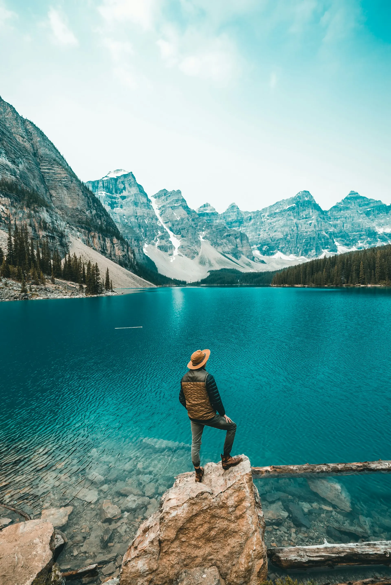
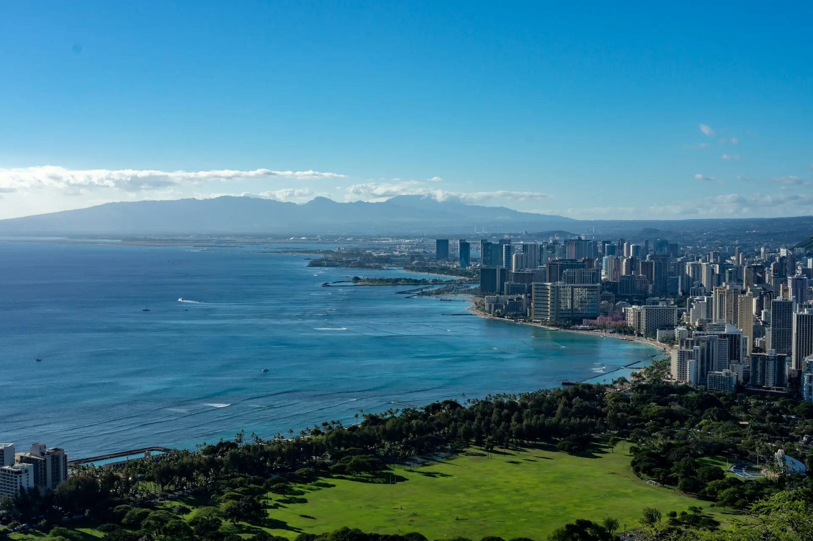
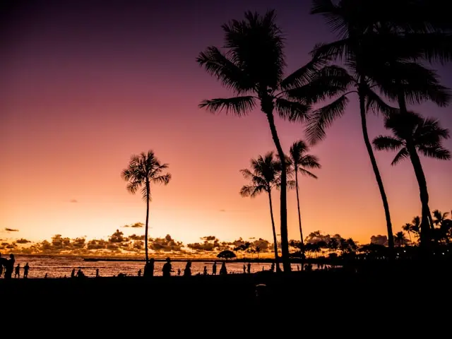
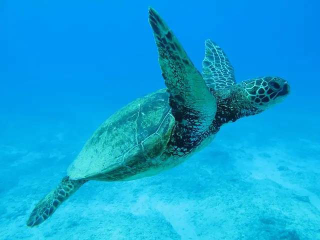
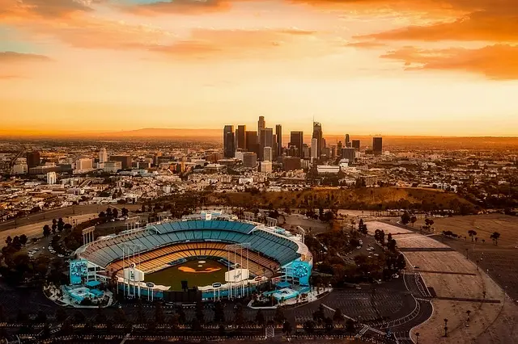
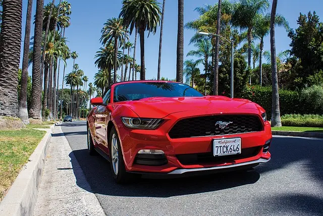
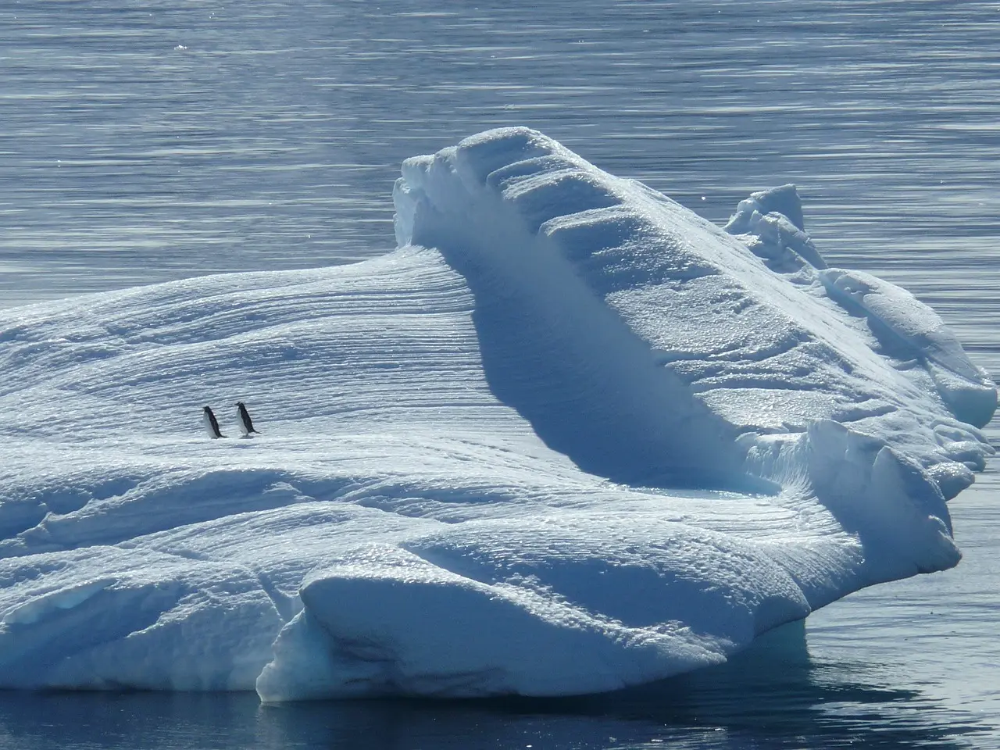
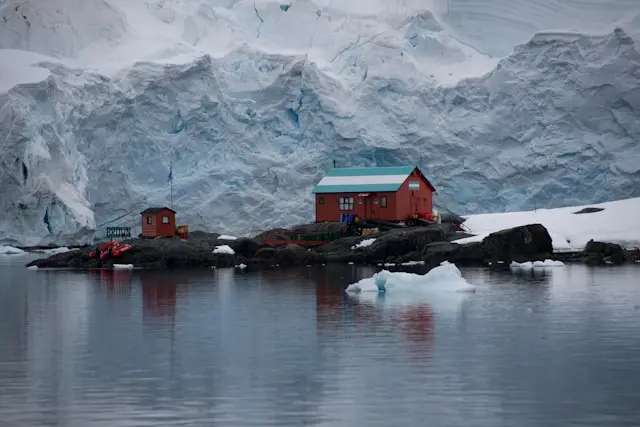

エメラルドグリーンの海、白い砂浜、そして揺らめくヤシの木。 ハワイは、訪れる人を魅了する南国のパラダイスです。
アクティブに過ごしたい方には、サーフィンやシュノーケリングなどのマリンスポーツがおすすめ。ゆったりとリラックスしたい方には、美しいビーチでのんびり過ごしたり、スパで癒しのひとときを過ごしたりするのも良いでしょう。
ハワイには、歴史ある街並み、伝統文化、そして温かい人々との触れ合いなど、様々な魅力が詰まっています。日常を忘れて、心も体もリフレッシュしたいあなたに、ハワイはぴったりの場所です。


映画の都ハリウッド、華やかなビバリーヒルズ、そして陽気なビーチタウン。 ロサンゼルスは、世界中の人々を魅了するエキサイティングな街です。
ハリウッドでは、映画スタジオ見学やスターの足跡巡りを楽しむことができます。ショッピング好きには、ロデオドライブで高級ブランド店巡りもおすすめです。美しいビーチでリラックスしたり、テーマパークで思いっきり遊ぶこともできます。
ロサンゼルスには、メキシコ料理や中華料理など、様々な国の料理を楽しめるレストランもあります。多様な文化が融合したこの街で、新しい発見や刺激的な体験がきっと待っています。



南極大陸は、地球上で最も過酷な環境とされる場所です。しかし、その過酷さゆえに、地球最後の秘境とも呼ばれ、手つかずの自然が息づいています。
南極には、広大な氷河、巨大な氷山、そしてペンギンやアザラシなどの多様な動物が生息しています。壮大なスケールの自然を目の当たりにすることは、一生に一度の貴重な体験となるでしょう。
近年では、南極観光も盛んになっており、クルーズ船に乗って南極大陸を周遊したり、上陸して実際に自然を体感したりすることができます。地球最後の秘境を訪れ、驚異の自然を体感したいあなたに、南極はぴったりの場所です。
